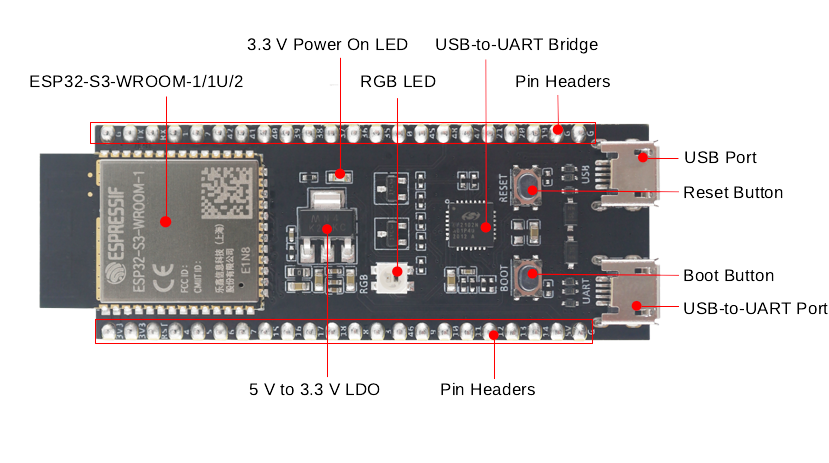
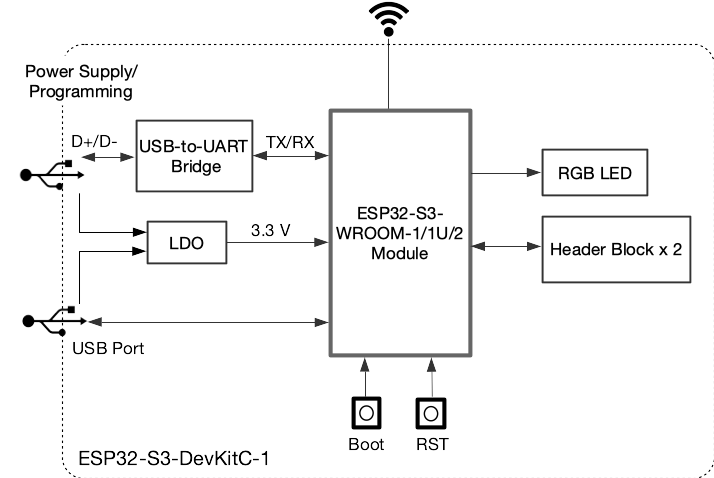

简介
本 Demo 使用一个简单的算法，通过 eeg 判断人是否闭眼；展示了 Braintouch 与嵌入式设备协同工作的能力

硬件准备
- Braintouch 1 台
- ESP32-S3-DevKitC-1 开发板 1 台
- USB2.0 数据线(标准 A 型转 Micro-B 型)
项目描述
认识 ESP32-S3-DevKitC-1 开发板
 
ESP32-S3-DevKitC-1 开发板是基于 esp32s3 系列 SOC 打造的开发板;
本项目将使用其有限的资源和功能，如 WiFi, RGB;需要的物料和操作步骤比较简单:
- 用 USB2.0 数据线，连接电脑和开发板，提供程序下载
- 通过 WiFi 连接, Braintouch Demo 展示软件
代码详解
所需 Middleware 如下:
- lwIP: 轻量级 TCP/IP 协议, 提供 socket 支持
- WiFi: 连接局域网
- Lep strip: 为 WS2812 提供驱动
基于 ESP32S3 的嵌入式代码工程文件较多, 以下将对部分代码进行分析:
WiFi 连接
函数调用顺序: app_main() => example_connect() => start() => wifi_start()
在 wifi_start() 中完成对 wifi 的配置和开启
static esp_netif_t *wifi_start(void)
{
...省略
//wifi配置
wifi_config_t wifi_config = {
.sta = {
.ssid = CONFIG_EXAMPLE_WIFI_SSID,
.password = CONFIG_EXAMPLE_WIFI_PASSWORD,
.scan_method = EXAMPLE_WIFI_SCAN_METHOD,
.sort_method = EXAMPLE_WIFI_CONNECT_AP_SORT_METHOD,
.threshold.rssi = CONFIG_EXAMPLE_WIFI_SCAN_RSSI_THRESHOLD,
.threshold.authmode = EXAMPLE_WIFI_SCAN_AUTH_MODE_THRESHOLD,
},
};
ESP_LOGI(TAG, "Connecting to %s...", wifi_config.sta.ssid);
ESP_ERROR_CHECK(esp_wifi_set_mode(WIFI_MODE_STA));
ESP_ERROR_CHECK(esp_wifi_set_config(WIFI_IF_STA, &wifi_config));
ESP_ERROR_CHECK(esp_wifi_start());
esp_wifi_connect();
return netif;
}socket 连接及 eeg 数据接收
初始化： esp_netif_init()
连接在任务 tcp_client_task 完成
static void tcp_client_task(void *pvParameters)
{
...
struct sockaddr_in dest_addr;
dest_addr.sin_addr.s_addr = inet_addr(host_ip);
dest_addr.sin_family = AF_INET;
dest_addr.sin_port = htons(PORT);
addr_family = AF_INET;
ip_protocol = IPPROTO_IP;
...
while(1)
{
sock = socket(addr_family, SOCK_STREAM, ip_protocol);
...
int err = connect(sock, (struct sockaddr *)&dest_addr, sizeof(struct sockaddr_in6));
...
//每2s尝试一次连接，直到连接成功，退出while(1)
}
int err = send(sock, socket_cmd_config, strlen(socket_cmd_config), 0);
//接收config data，并保存
...
while (1)
{
int len = recv(sock, rx_buffer, 512, 0);
//接收512个字节数据并进行处理
}
}数据处理
void process_task(void)
{
while(1)
{
...
eeg_queue_poll(&eeg_data[i], eeg_buffer);
float *fft = fft_operate(eeg_buffer, 1024);
// 接收数据，并对 5s 数据进行 fft
// 5s 接收 250 * 5 = 1250个数据，但是这里 fft 只能处理 2 的指数个数据，所以取 1024
uint32_t frq_15 = 15*1024/125 + 1;
uint32_t frq_20 = 20*1024/125 + 1;
uint32_t frq_8 = 8*1024/125 + 1;
uint32_t frq_13 = 13*1024/125 + 1;
for(int j=frq_8; j1.35)
result[i] = 1;
else
result[i] = 0;
...
// 算法结果反馈
xQueueSend(led_state_queue, &work_state, 10);
}
} RGB 显示结果
驱动基于 WS2812 的 RGB led 灯反馈算法结果
闭眼：白色灯亮
睁眼：灭灯
void led_task(void)
{
//接收算法反馈结果
if(!xQueueReceive(led_state_queue, &work_state, 0))
...
//状态机，led显示
switch(work_state)
{
...
}
}工程文件下载
使用步骤：
step1: 为 ESP32-S3-DevKitC-1 开发板烧录程序
- 安装 ESP-IDF
- 进入工程目录，运行 idf.py build，进行工程编译
- 用 usb 线连接开发板和上位机, 使用指令 idf.py -p COMx flash, 烧录程序
step2: 开启 BraintouchLib, 通过 WiFi 将开发板与其连接
- 使用 idf.py menuconfig, 设置 wifi 名称及密码，设置需连接 ip 和 port
更改以上设置后, 需重新编译和烧录
step3: 佩戴 Braintouch 设备, 并通过通道检测
step4: 开启开发板, 并连接到 Braintouch Lab
- 可以使用 idf.py -p COMx monitor命令, 进行 com 口打印调试信息
- 开始使用 Demo 进行闭眼检测
点击下载文件: Braintouch_demo_socket.zip